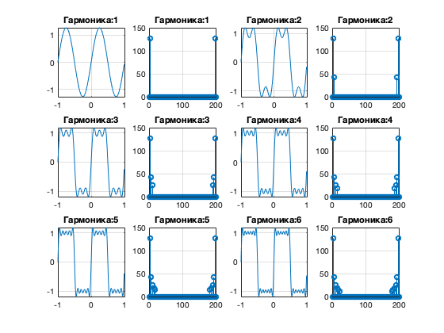

%### 6 СОЗДАНИЕ МЕАНДРА ###% clear; close all; N = 6; %Частота гармоник Fs = 100; %Частота дискретизации t = -1 : 1/Fs : 1-1/Fs; %Вектор временных отсчетов nh = (1 : N)*2-1; y = sin(2*pi*nh'*t); Am = 4/pi./nh; s1 = y.*Am'; s2 = cumsum(s1); % сумма всех значений for k = 1:N subplot(3, N/1.5, k*2-1) plot(t, s2(k,:)); grid on; title(['Гармоника:' num2str(k)]) end for k = 1 : N s_fft = abs(fft(s2(k,:))); subplot(3, N/1.5 ,k*2); stem(s_fft); grid on; title(['Гармоника:' num2str(k)]) end